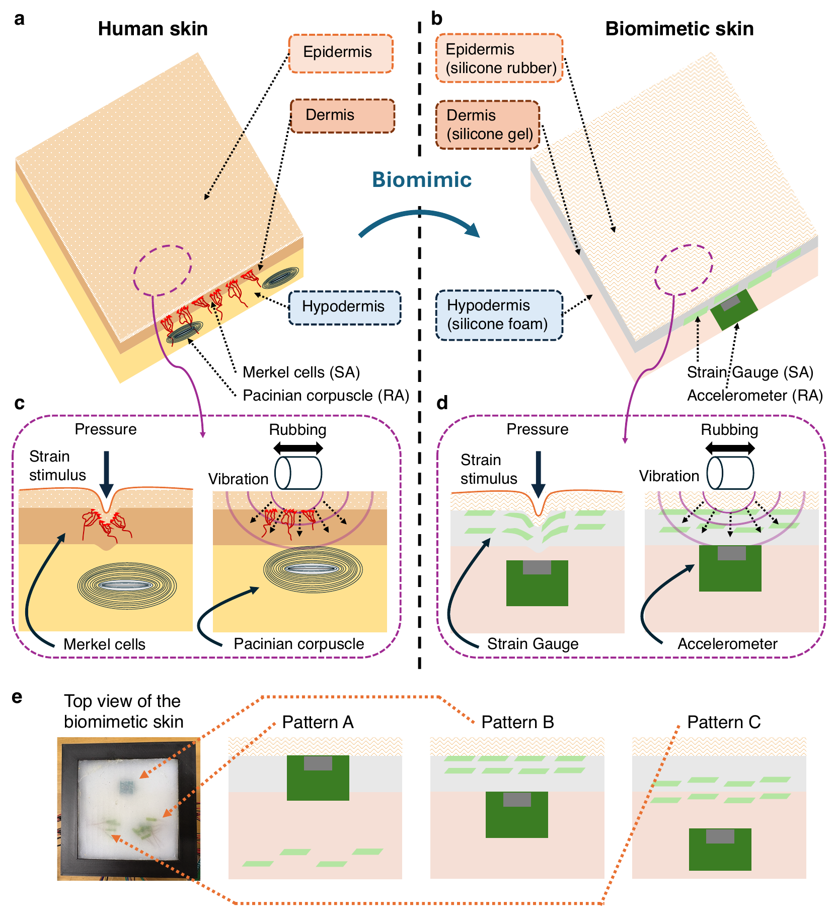
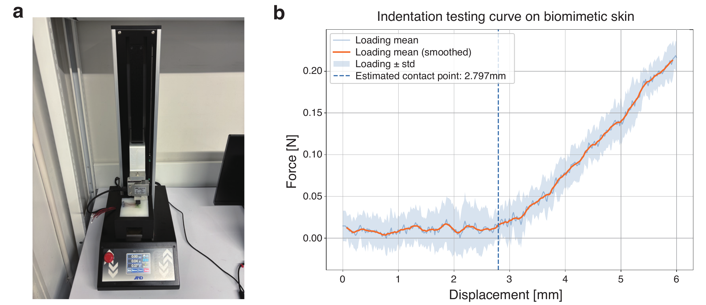
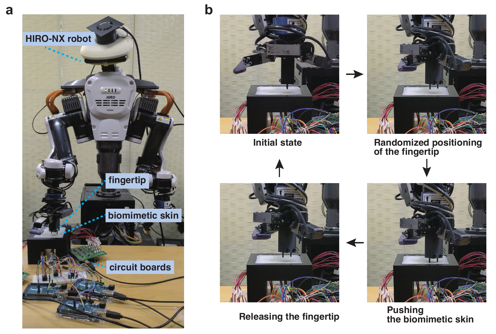
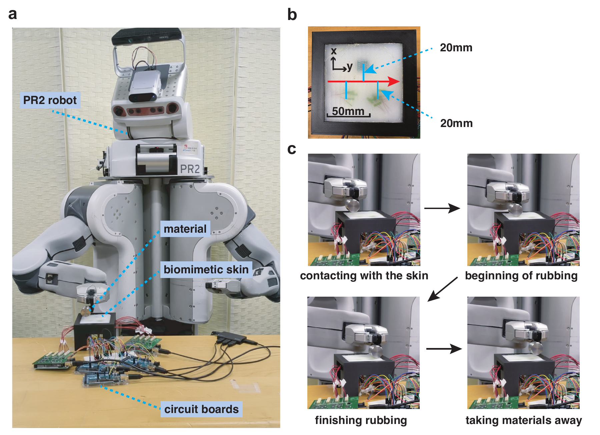
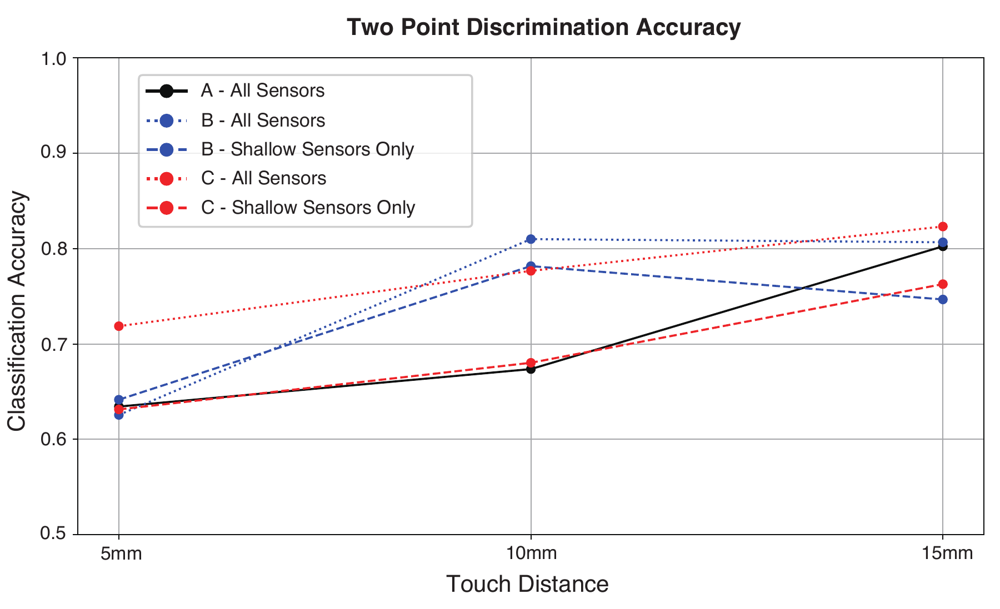
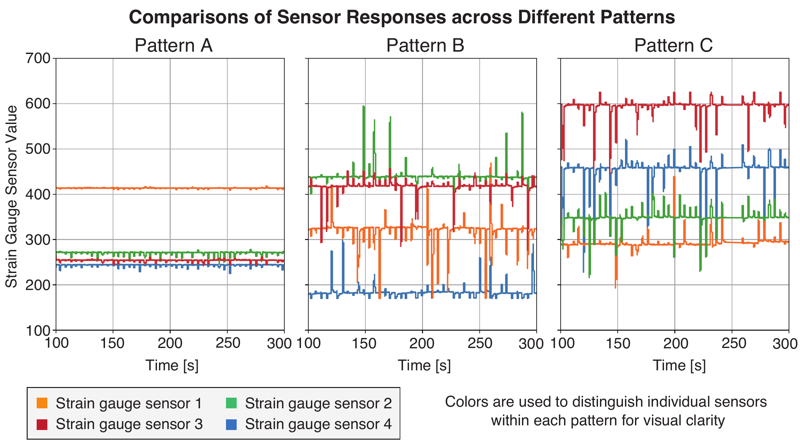
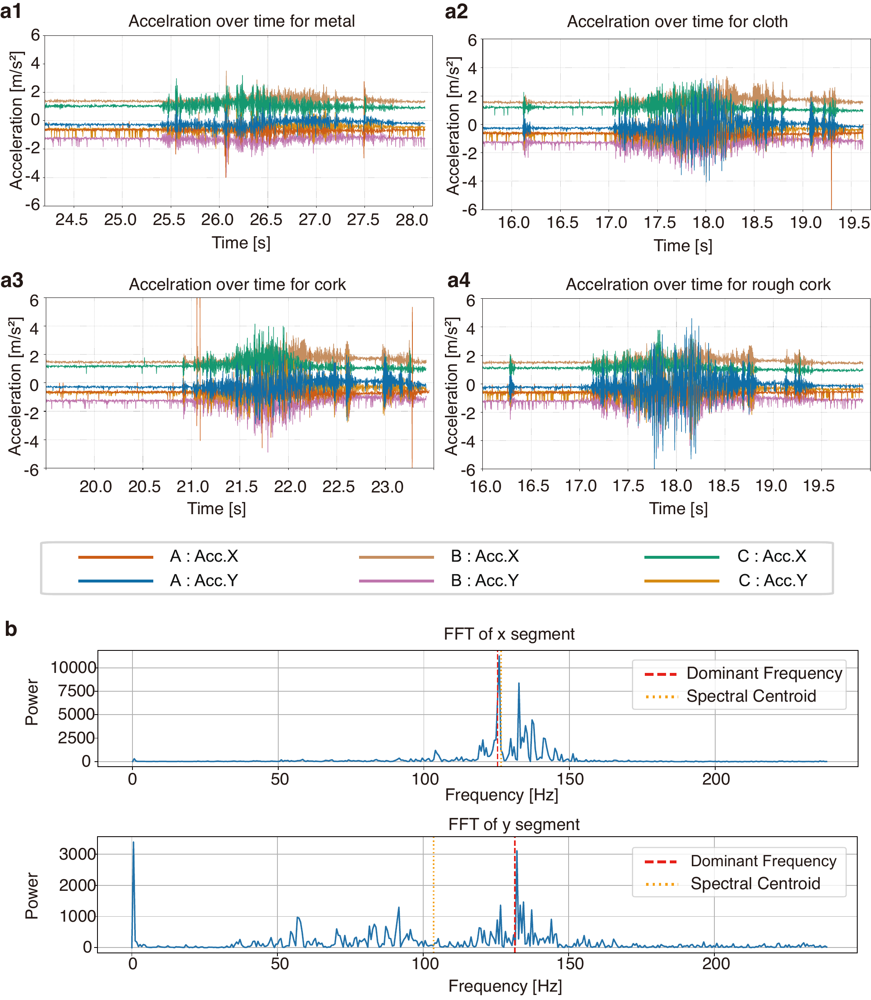
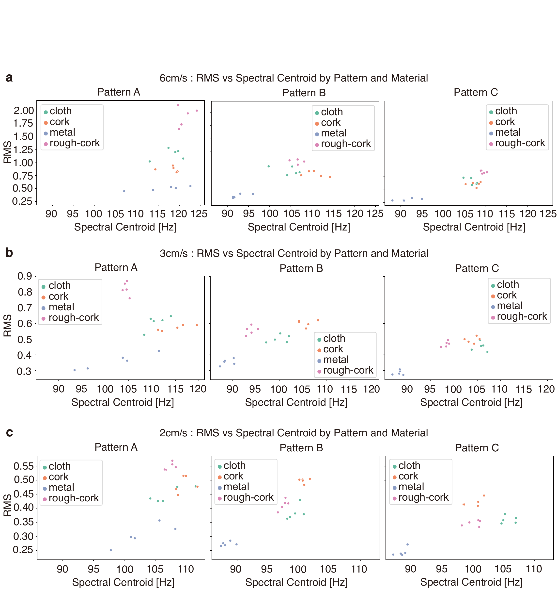
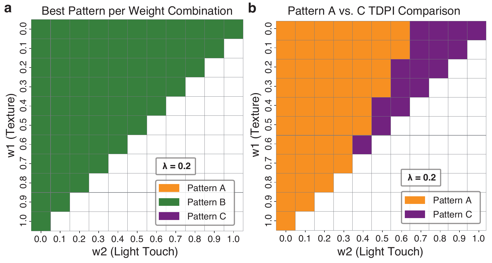

Vibration sensing near the surface
An accelerometer near the surface, with four strain gauges embedded beneath it.
Counterfactual arrangementBIOLOGICAL ORGANIZATION, EXPLORED THROUGH ROBOTICS
Bioinspiration & Biomimetics 21 (2026) 046009
The University of Tokyo
1 Department of Mechano-Informatics 2 AI Center
Graduate School of Information Science and Technology
ONE BIOLOGICAL QUESTION
Pressure-sensitive and vibration-sensitive receptors occupy different depths in human skin. What does this organization contribute to tactile function—and what changes when we rearrange it?
We build a layered, compliant skin with three sensory arrangements, including alternatives that are difficult to test in living systems. Two robotic setups deliver controlled stimuli to the same skin design, probing three complementary aspects of tactile function under passive stimulation.
Sensor arrangement affects weak-contact detection, spatial discrimination, and the vibration features used for texture identification.

Two-point discrimination-like classification from pressure responses.
Explore the experiment ↓Weak-contact detection using strain-gauge responses.
Explore the experiment ↓Texture classification and the structure of vibration-derived features.
Explore the experiment ↓WHAT WE VARY
The skin combines a silicone-rubber epidermis, a silicone-gel dermis, and a softer silicone-foam subcutaneous layer. Strain gauges provide pressure-sensitive analogs of Merkel cells; accelerometers provide vibration-sensitive analogs of Pacinian corpuscles. Pattern B approximates the biological depth relationship between superficial pressure-sensitive receptors and deeper vibration-sensitive receptors. Pattern A reverses this depth order, whereas Pattern C places both sensor types deeper than in Pattern B.
An accelerometer near the surface, with four strain gauges embedded beneath it.
Counterfactual arrangementEight strain gauges near the epidermal–dermal boundary and just beneath it, above an accelerometer in the deep dermis.
Superficial pressure sensing · deeper vibration sensingEight strain gauges in the deep dermis and at the dermal–subcutaneous boundary, above a deeper accelerometer.
Counterfactual arrangementEach arrangement occupies a 20 × 20 mm region. Sensor size and mechanical interference limit placement: A contains four strain gauges; B and C contain eight across two depths. Four-sensor subsets of B and C are also compared in the spatial task.
Indentation testing provides a mechanical check of the skin before interpreting the tactile tasks. Ten loading–unloading cycles showed hysteresis, consistent with viscoelastic behavior. The estimated reduced Young’s modulus was approximately 15–17 kPa, depending on the contact-area approximation. This is an effective property of the layered sample and supports an approximate comparison with biological skin.

Human skin contains diverse mechanoreceptors, including Merkel cells and Pacinian corpuscles, each localized in specific regions. Although their spatial organization is known to be shaped by molecular signaling and neural induction during development, experimentally examining its functional significance under controlled conditions in living systems remains challenging. In particular, physically comparing alternative receptor arrangements that do not occur biologically is difficult.
In this study, we developed a layered biomimetic robotic skin designed to mimic key structural features of human skin tissue by embedding receptor-analog sensors within compliant soft media. Using this platform, we implemented both biologically motivated and counterfactual sensory arrangements and quantitatively evaluated their performance across three passive tactile tasks: detection of weak contacts, a two-point discrimination-like assessment, and texture identification. Arrangements reflecting key features of the biologically motivated sensory organization exhibited higher performance than the alternative configurations examined. This study addresses a biological question concerning how spatial organization influences tactile function by presenting a biomimetic robotic approach that enables physical and empirical comparison of biologically motivated and counterfactual sensory arrangements that are difficult to investigate in living systems.
HOW WE APPLY STIMULI
HIRO-NX and PR2 serve as controlled stimulus sources for different modes of contact. The comparison concerns the sensory arrangements in the skin; both setups contribute to evaluating their tactile function.
HIRO-NX · PRESSING

Precise, repeatable positioning enables one- and two-point stimuli and weak contacts. Randomized positions—and, for spatial discrimination, orientations and indentation depths—test performance across varying contact conditions.
PR2 · STROKING

Compliant, backdrivable arms make PR2 suitable for stroking with less interference from control-induced vibration. A shared path across the arrangements allows simultaneous comparison during the same stroke.
TASK 01 · SPATIAL DISCRIMINATION · HIRO-NX
One-point stimuli and two-point stimuli separated by 5, 10, or 15 mm are classified from strain-gauge response peaks. This asks how sensor depth and number affect spatial discrimination in the skin.
Using four sensors per arrangement, B shows a pronounced improvement at 10 mm. Using all eight sensors in B and C further improves performance relative to their four shallower sensors alone.
The paper interprets B’s advantage at 10 mm through the narrower receptive fields of superficial sensors. At 15 mm, randomized contacts can extend beyond the 20 × 20 mm sensor region; deeper sensors’ broader receptive fields can then help. C with all eight sensors also performs well, sometimes exceeding B. The results depend on spacing, sensor count, and the finite sensing area.

HIRO-NX applies 100 indentations per condition, with randomized position, orientation, and depth. Varying depth helps prevent classification based only on a fixed force difference between one- and two-point contacts. A random forest classifier uses response peaks, evaluated with five-fold stratified cross-validation repeated with three random seeds.

TASK 02 · CONTACT SENSITIVITY · HIRO-NX
This task tests sensitivity to weak contact, complementing the spatial classification task. HIRO-NX repeats 20 weak contacts at randomized positions. A peak counts as a detection when it exceeds a threshold derived from responses transmitted while a neighboring arrangement is pressed (μ + 2σ).
B detects 17 of 20 contacts, compared with 3 for C and none for A. The discussion links deeper placement to broader receptive fields and more cross-activation by neighboring stimuli. Together with Task 01, this supports an advantage of superficial pressure sensing for subtle, localized contact within the tested configurations.
Detected weak-contact events · 20 trials per arrangement · Table 3
TASK 03 · TEXTURE INFORMATION · PR2
PR2 strokes metal, cloth, cork, and roughened cork across the skin at 2, 3, and 6 cm/s. This task examines both material classification and how sensor placement changes the vibration information available to the classifier.
Material-dependent acceleration waveforms are segmented and analyzed in both the time and frequency domains. Features include RMS amplitude, dominant frequency, spectral centroid, spectral bandwidth, and zero-crossing rate. The waveforms and Fourier analysis in Fig. 7 show the physical signals underlying texture identification.

Random forest classifiers are trained separately at each stroking speed, with five strokes per material and five-fold cross-validation. B achieves 95%, 95%, and 90% accuracy at 2, 3, and 6 cm/s, respectively. All three arrangements support texture identification; C reaches 100% at 6 cm/s, so B does not lead at every speed.
At 2 cm/s, Patterns B and C both reach 95%.
| Speed | Pattern A | Pattern B | Pattern C |
|---|---|---|---|
| 2 cm/s | 90% | 95% | 95% |
| 3 cm/s | 90% | 95% | 75% |
| 6 cm/s | 90% | 90% | 100% |
Fig. 8 plots RMS amplitude against spectral centroid, two features associated in prior work with texture roughness and fineness. These distributions reveal differences between arrangements beyond classification accuracy. Covariance-trace statistics in Table 5 quantify the dispersion in this feature space.
Pattern A shows larger RMS differences between materials and greater spectral-centroid dispersion, suggesting the potential to capture richer vibrational information. The discussion proposes reduced mechanical filtering by the overlying tissue as a possible explanation. Greater feature dispersion may also affect discrimination stability.

BRINGING THE THREE TASKS TOGETHER
The three tasks evaluate complementary aspects of tactile function: spatial discrimination, weak-contact detection, and texture identification. The Tactile Discrimination Performance Index (TDPI) combines their normalized performance while allowing their relative weights to vary.
B performs well over a broad range of task weights. Comparing A and C reveals a further tradeoff: A becomes favorable in some regions emphasizing texture, while C is favored when weak-contact detection is weighted more heavily. The value of an arrangement therefore depends on which tactile functions matter.
Performance is adjusted for chance level where applicable and standardized across arrangements. Spatial-task performance averages the three tested contact separations. The index then combines the task scores with a variability penalty applied only to texture-classification accuracy across stroking speeds.
This across-speed accuracy penalty is distinct from the feature dispersion shown in Fig. 8. TDPI is an auxiliary summary of trends within this experiment, rather than a universal scale of tactile ability. The paper also examines the effect of changing the penalty coefficient.

DISCUSSION
Sensor depth changes how deformation and vibration propagate through the tissue. Superficial pressure sensing favors localized contact information; deeper vibration sensing filters the response differently. The robotic design implication is that arrangement within a compliant medium is itself a contributor to multimodal tactile function.
B performs well across the passive pressing and stroking tasks studied here. The material-dependent vibration responses in A suggest potential benefits when vibrational cues are especially useful. The paper relates this idea to relatively superficial vibration-sensitive receptors associated with Eimer’s organs in moles and Grandry/Herbst corpuscles in waterfowl beaks.
These biological examples motivate hypotheses about the relationship between sensory organization, behavior, and environment. The robot experiments do not test those species or establish an evolutionary explanation.
Receptor arrangements are difficult to manipulate independently in living systems. Building both biologically motivated and alternative configurations makes their functional consequences experimentally accessible. Physical implementation also captures contact and frictional phenomena, including stick–slip, that are difficult to model accurately.
The results describe three realizable configurations in a simplified tissue model. Sensor size, density, and depth are constrained by construction; the arrangements do not reproduce biological anatomy quantitatively. Rigid accelerometer packages may also perturb local mechanics, particularly in A.
Denser, smaller, more compliant sensors and systematic variation of placement are needed to test how broadly these trends hold. The contribution is a physical method for investigating functional consequences of sensory organization, with evidence for advantages and tradeoffs in the design space examined.
REFERENCE
@article{miki2026sensory,
title = {Robotic physical comparison of biologically motivated and counterfactual sensory arrangements using biomimetic skin},
author = {Miki, Akihiro and Hasegawa, Shun and Ribayashi, Yoshimoto and Sahara, Yuta and Kawaharazuka, Kento and Okada, Kei},
journal = {Bioinspiration & Biomimetics},
volume = {21},
number = {4},
pages = {046009},
year = {2026},
doi = {10.1088/1748-3190/ae7786}
}For questions about this work, please contact Akihiro Miki
Department of Mechano-Informatics, The University of Tokyo.
Supported by JSPS KAKENHI Grant JP24KJ0697.